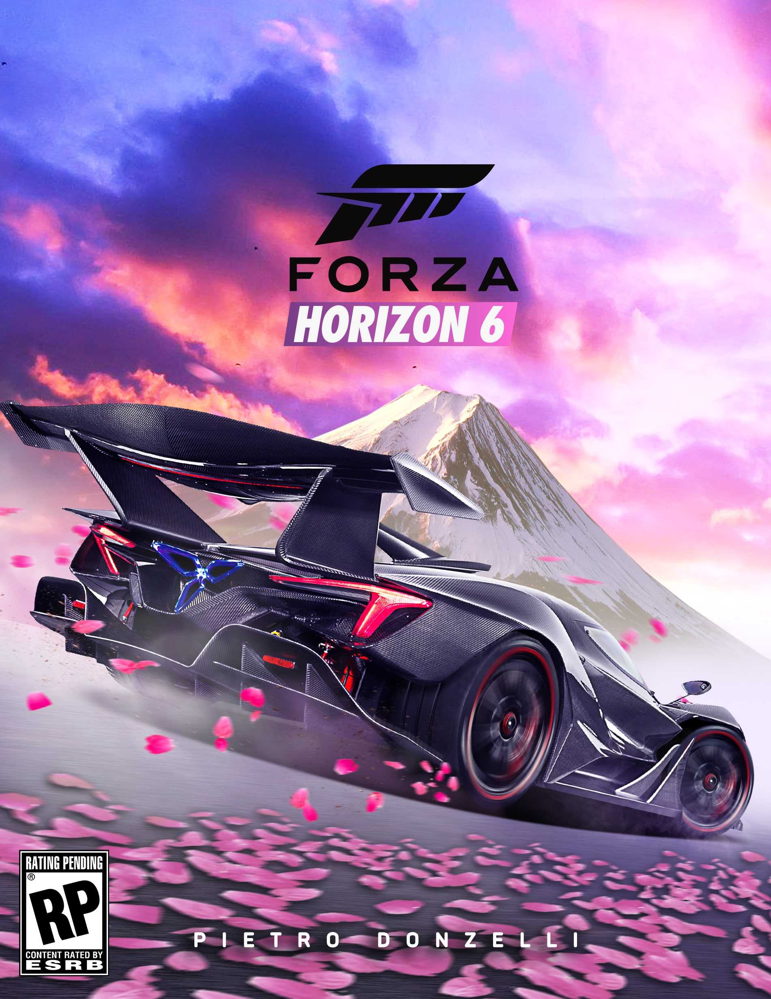
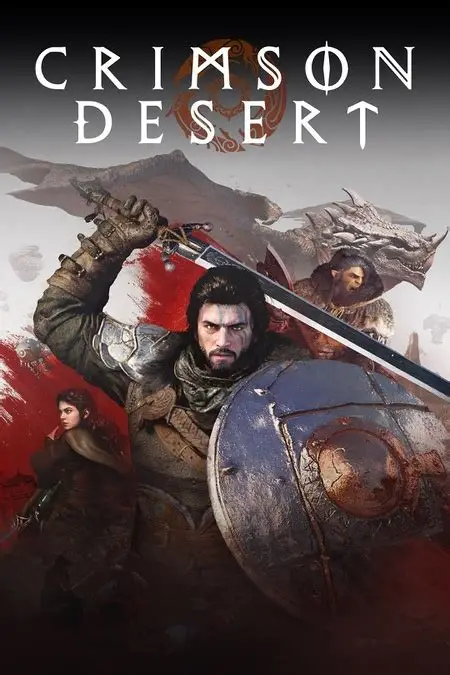
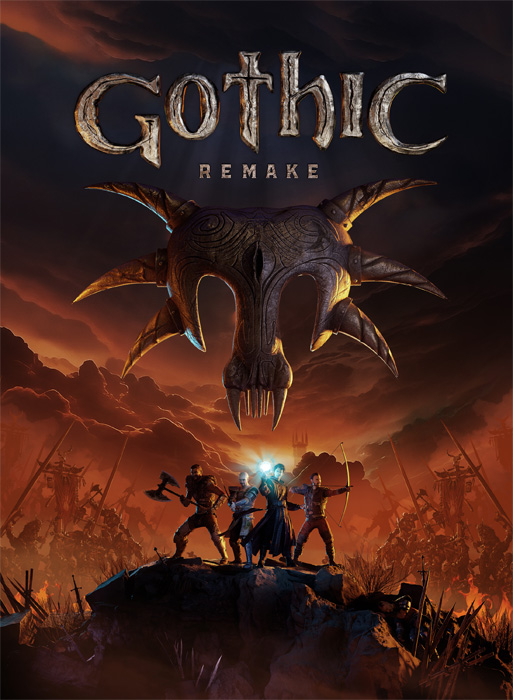
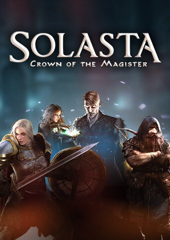
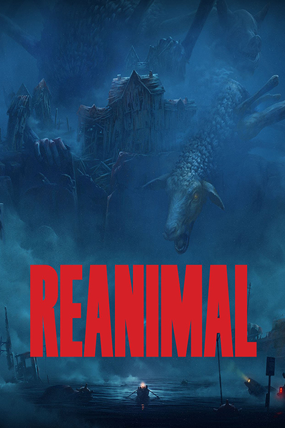
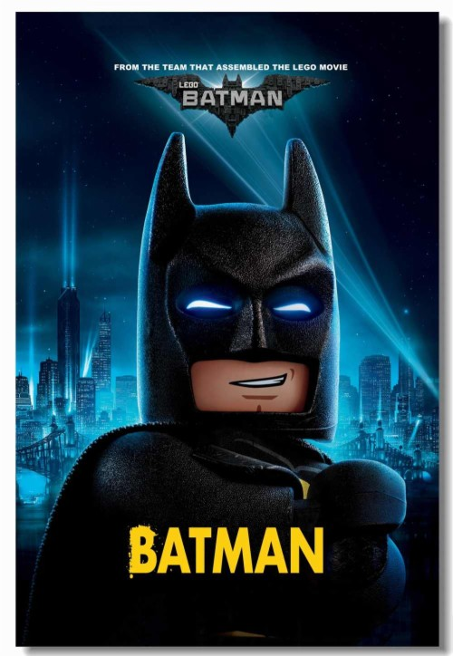
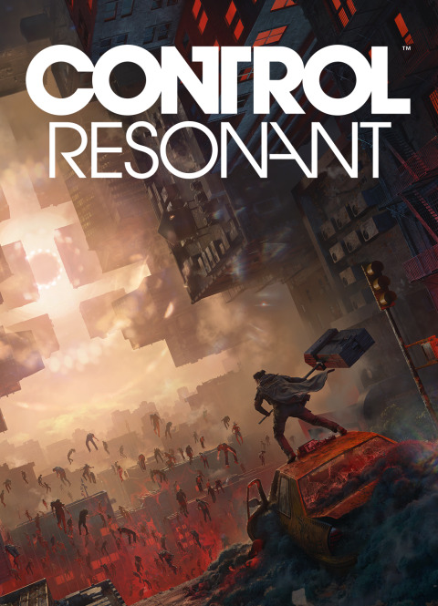

Ігри на ПК 2026: рейтинг найкращих проєктів року
Найкращі ігри на ПК 2026 року: рейтинг найочікуваніших і популярних проєктів
Кожен рік приносить нові відкриття, і найкращі ігри на ПК 2026 року охоплюють усі жанри: від запаморочливих екшенів до глибоко опрацьованих RPG і захопливих симуляторів.
Топ ігри у жанрі екшен
2026 рік багатий на цікаві ігри на ПК, і жанр екшен отримав потужне поповнення. Ось чотири хіти, які варто спробувати кожному, коли вони вийдуть у продаж.

Resident Evil Requiem
Дата виходу: 26 лютого 2026 року
Resident Evil Requiem — напруга, реалізм і класика в новому вигляді. Кошмар для живих. Біжіть від смерті крізь крижаний жах.

007: First Light
Дата виходу: 27 травня 2026 року
Елегантний шпигунський екшен у дусі класики. Гравець бере на себе роль агента 007, виконуючи операції у Лондоні, Парижі і Токіо.
Суміш скритності, стилю і драйву робить гру кінематографічною пригодою.

Forza Horizon 6
Дата виходу: 19 травня 2026 року
Швидкість, неон і дрифт у Японії. Forza Horizon 6 перетворює гонки на справжнє шоу з трасуванням променів, живими містами і відчуттям свободи. Один із найефектніших проєктів 2026 року.
Ці цікаві ігри на ПК доводять, що екшен залишається серцем геймінгу — яскравим, потужним і по-справжньому захопливим.
Найкращі RPG ігри на ПК 2026
У 2026 році жанр RPG обіцяє потужний ривок уперед — на нас чекають довгоочікувані релізи, які вже називають найочікуванішими найкращими іграми на ПК.

Crimson Desert
Дата виходу: 20 березня 2026 року
Crimson Desert — масштабна рольова гра з відкритим світом від творців Black Desert. Гравців чекає кінематографічний сюжет, реалістичні бої і вражаюча графіка.
Це один із найамбітніших проєктів 2026 року, здатний задати новий стандарт RPG на ПК.

Gothic 1 Remake
Дата виходу: 5 червня 2026 року
Культова класика повертається! Gothic 1 Remake оновить легендарну історію про в’язня у магічній колонії.
Розробники обіцяють зберегти дух оригіналу, але з сучасною графікою, озвученням і переробленою системою бою.

Solasta 2
Дата виходу: 12 березня 2026 року
Продовження тактичної RPG, натхненної Dungeons & Dragons. У Solasta 2 з’являться нові класи, кооператив і ще більше стратегічних можливостей.
Чудовий вибір для тих, хто любить покрокові бої і продуманий геймплей.
Ці комп’ютерні ігри поки тільки готуються до релізу, але вже викликають величезний інтерес у фанатів жанру. 2026 рік обіцяє стати справжнім святом для всіх, хто цінує свободу вибору і глибокі історії.
Популярні онлайн ігри для ПК
У 2026 році онлайн-геймінг виходить на новий рівень: більше кооперативу, більше змагань і більше емоцій. Ось три найочікуваніші ігри для ПК, які обіцяють захопити гравців по всьому світу.
.webp22222.webp)
Subnautica 2
Дата виходу: очікується у 2026 році
Продовження легендарної підводної пригоди тепер із повноцінним мультиплеєром.
Гравці зможуть досліджувати глибини океану разом, будувати бази і виживати серед небезпечних істот. Атмосфера дослідження і свободи — на висоті.
Marathon
Дата виходу: 5 березня 2026 року
Новий науково-фантастичний шутер від Bungie — суміш PvP і виживання.
Команди змагаються за ресурси на загадкових планетах. Marathon обіцяє стати однією з найтехнологічніших комп’ютерних ігор 2026 року.

REANIMAL
Дата виходу: 13 лютого 2026 року
Оригінальний екшен, де гравці перетворюються на гібридів тварин, борючись за виживання у постапокаліптичному світі.
Кооператив, трансформації і незвичайна атмосфера роблять REANIMAL яскравою новинкою сезону.
Ці ігри на ПК доводять: 2026 рік — час онлайн-пригод і командного драйву.
Цікаві ігри на ПК, які варто спробувати кожному геймеру
2026 рік готовий подарувати геймерам неймовірні пригоди — від реалістичних міст до супергеройських битв і таємничих світів.
Ці цікаві ігри на ПК поєднують видовищність, атмосферу і продуманий геймплей, пропонуючи щось нове кожному.

GTA VI
Дата виходу: 13 листопада 2026 року на PlayStation 5, Xbox Series X|S та пізніше можливо на ПК
Головний ігровий феномен десятиліття. GTA VI переносить нас у Вайс-Сіті — живий мегаполіс із реалістичною фізикою, масштабним сюжетом і динамічною економікою.
Світ реагує на кожну дію гравця, а кожна місія відчувається як сцена з фільму.

Marvel’s Wolverine
Дата виходу: 15 вересня 2026 року на PlayStation 5, Xbox Series X|S та пізніше можливо на ПК
Новий проєкт від Insomniac Games обіцяє подарувати фанатам супергероїв потужну історію про Логана.
У Marvel’s Wolverine акцент зроблено на похмуру атмосферу, кінематографічний екшен і емоційну драму.
Це не просто гра, а інтерактивний бойовик із душею.

LEGO Batman: Legacy Of The Dark Knight
Дата виходу: 15 вересня 2026 року
Гумор, стиль і ностальгія повертаються! LEGO Batman: Legacy Of The Dark Knight об’єднує покоління шанувальників коміксів,
пропонуючи досліджувати Готем, вирішувати загадки і боротися з культовими лиходіями у класичному LEGO-форматі.
Весело, яскраво і по-справжньому затишно.

Control: Resonant
Запланована на 2026 рік
Продовження містичного екшену від Remedy повертає гравців у світ Бюро Контролю.
Control: Resonant поєднує надприродні здібності, атмосферу невідомості і сюжет, від якого неможливо відірватися.
Чудовий вибір для любителів загадок і незвичайного оповідання.